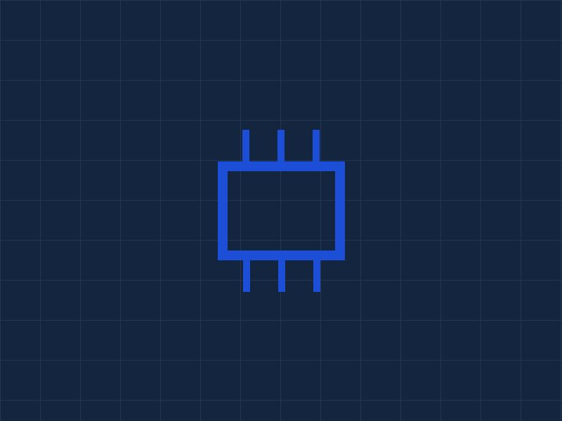

Academics
Every Ironwood student takes the same college-preparatory core in English, mathematics, science, and social studies, then adds a track. The track is not an elective bolted onto the side of the day; it is a four-year sequence that builds toward a credential.
The STEM track
The STEM sequence moves from foundations in programming and electronics into three specializations. Students pick a specialization in the eleventh grade after two years of shared groundwork, so the choice is informed rather than a guess made at fourteen.
- Computer science: Python and JavaScript, data structures, version control, and a senior capstone shipped to a real user.
- Robotics: mechanical design, microcontrollers, and competition build seasons with an industry mentor attached to each team.
- Cybersecurity: networking fundamentals, defensive tooling, and an incident-response simulation run by working practitioners.

The Skilled Trades track
Trades students spend a substantial share of the week in shop settings rather than classrooms. Lab hours are logged against the requirements of the relevant apprenticeship program, so the time counts for something after graduation instead of starting over.
- Electrical: residential and light commercial wiring, code reading, and building automation controls.
- HVAC: refrigeration cycles, system diagnostics, and EPA Section 608 certification preparation.
- Welding: SMAW, GMAW, and TIG process training toward AWS entry-level certification.
- Automotive: diagnostics, electrical systems, and an increasing share of hybrid and EV service work.
Dual enrollment and the college bridge
Ironwood students earn college credit through Austin Community College beginning in the eleventh grade, at no cost to the family. Coursework transfers as ACC credit and is accepted by most Texas public institutions. Students who meet the GPA and credit thresholds can follow a bridge pathway into the University of Texas at Austin, and we deliberately keep that pathway open to trades students, who are too often written out of it.
Several partner institutions also accept our credit or provide coursework our students use directly.
- Austin Community College
- University of Texas at Austin
- UMGC
- Purdue Global
- MIT OpenCourseWare
Graduation requirements
| Area | Credits | Notes |
|---|---|---|
| English | 4 | Includes technical writing in the senior year |
| Mathematics | 4 | Through at least Algebra II |
| Science | 3 | Physics required for both tracks |
| Social studies | 3 | |
| Track sequence | 6 | STEM or Skilled Trades, four-year sequence |
| Work-based learning | 1 | Internship, apprenticeship hours, or co-op |
Work-based learning is a requirement, not a perk
Every senior completes an internship, logged apprenticeship hours, or a co-op placement with a partner employer. Students leave with a supervisor who can vouch for them by name, which for a great many of our graduates matters more than any line on a transcript.